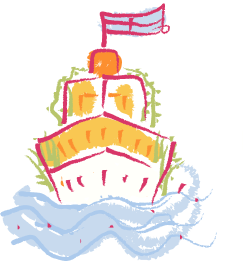
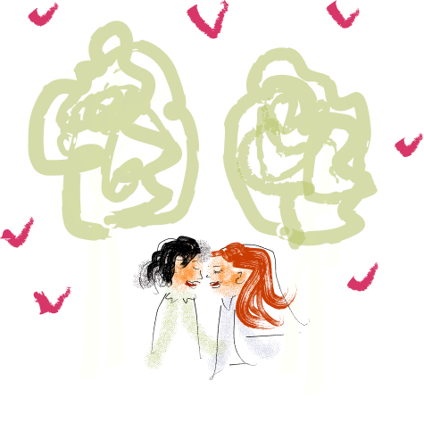
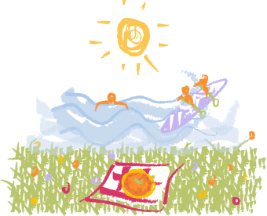
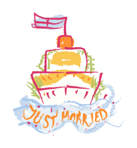

Vi har hyrt Lurö Krog & Gästhärbärge exklusivt hela midsommarhelgen 24-27 juni 2027 för ett gräsfläckigt, blött och blommigt midsommarbröllop mitt på Vänern.
Gemensamt:
Grupp 1:
Grupp 2:
Gemensamt:

från 12:00 - Incheckning
13:00-14:00 - Välkomstlunch
15:00-16:00 - Mingel
19:00-21:00 - Middag
från 12:00 - Incheckning
från 12:00 - Incheckning

från 12:00 - Incheckning
13:00-14:00 - Välkomstlunch
15:00-16:00 - Mingel
19:00-21:00 - Middag
från 12:00 - Incheckning
från 12:00 - Incheckning

09:00-11:00 - Frukost
12:00 - Utcheckning och Båtresa tillbaka

Utresor Spiken - Lurön
Hemresor Lurön - Spiken
Önskas det att vara med på bara cermonin kommer det gå en båt direkt efter, ca 15.00, med vigselförrättaren.
Exakta tider kommer när vi närmar oss midsommar.